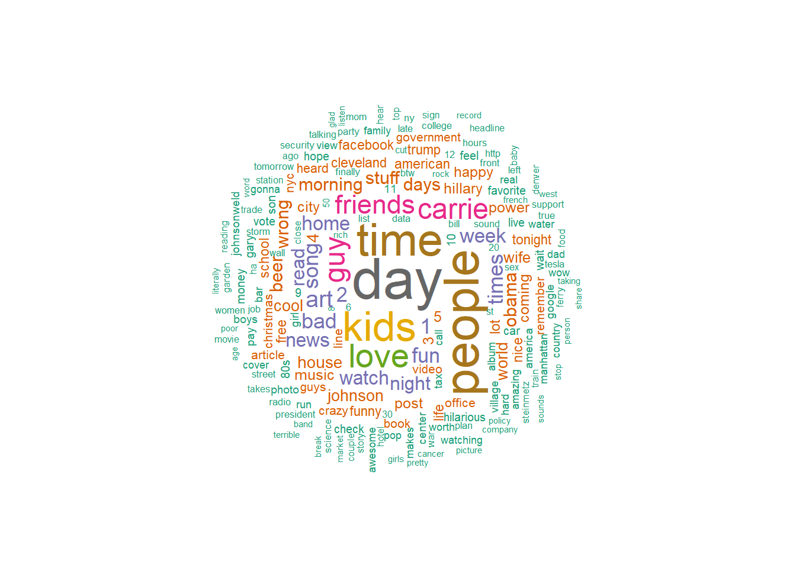
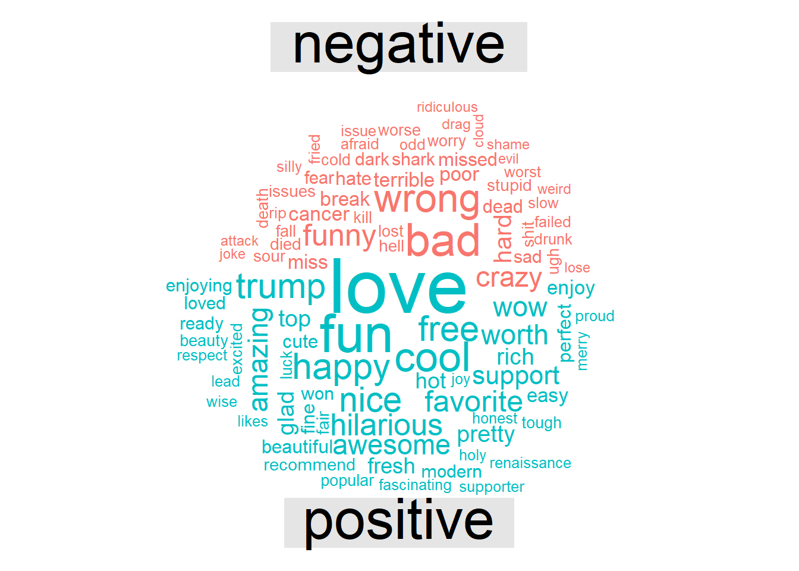

library(rvest)
library(stringr)
library(dplyr)
library(tidyverse)
library(tidytext)
library(wordcloud)
library(knitr)
library(kableExtra)
library(ggplot2)
library(zoo)
library(reshape2)
library(lubridate)
#make explicit so kableExtra doesn't complain later
options(knitr.table.format = "html") Plumbing the Depths of My Soul (in Facebook)
R
First post! Let’s start out nice and easy. No big data machine learning or heavy stats. This post will merely explore the depths of my soul through a meta-analysis of every one of my Facebook posts. Meta-navel gazing, if you will.
Perhaps you are not all that interested in the plumbing the depths of my soul. Still, you may be interested in seeing how you can do an analyis of your own Facebook life in the comfort of your own home. If so, read on!
We will (lightly) cover web scraping, sentiment analysis, tests of significance and visualize it with a generous helping of ggplot. Note I use the tidyverse/dplyr vernacular. This is fast becoming a dialect of R. I quite like it but its syntax is different than traditional R. It produces sometimes slower, but much more readable, code. Basically, you “pipe” data tables through action verbs using the pipe operator (“%>%”).
Let’s go do some outsider data science!
Start by loading needed packages.
Fetch and clean all the words in my Facebook posts
Facebook lets you download a log of all your activity at https://Facebook.com/settings. Look toward the bottom of the page for the download link. You will get an email with a link to a zipped set of html files. These are what I’ll be using for the analysis.
First let’s get all my comments since the dawn of my Facebook existence.
path='data/'
raw_timeline<- read_html(paste0(path,"timeline.htm"),encoding="UTC-8")Now that we have the raw data we need to extract the just the text of the comments. Visually inspecting the raw html file reveals that all of the comments I wrote have the tag <div class="comment"> so I construct an xpath selector to grab those nodes then get the text in them. This is what the raw html looks like:
</p><p><div class="meta">Thursday, November 16, 2017 at 1:17pm EST</div>
<div class="comment">I’m sure you are all thinking “what does this mean for Al Franken?”</div>
</p><p>
<div class="meta">Thursday, November 16, 2017 at 10:44am EST</div>
Art Steinmetz shared a link.
</p><p>
The challenge here is that we want to get the date also which appears BEFORE the comment and has the tag <div class="meta">. Unfortunately, as we see above, merely sharing a link generates this tag without any comment or a different tag class so there are more meta classes than comment classes. Facebook should create a separate XML record for each log activity, but they don’t.
The code below seems inelegant to me. for loops in R are non-idiomatic and indicate somebody was steeped in a non vectorized language (like me). I tried without success to craft an xpath expression that would walk backwards when it sees a comment class to get the date. In the end I resorted to the devil I know, a loop.
timeline_post_nodes <- raw_timeline %>%
html_nodes(xpath="//div[@class ='comment'] | //div[@class='meta']")
timeline_posts1<-NULL
#the bit below is the slowest part of our project.
#If you post multiple times a day over years it could take a while.
for (n in 1:length(timeline_post_nodes)){
if ( html_attr(timeline_post_nodes[n],"class")=="comment"){
post= html_text(timeline_post_nodes[n])
date= html_text(timeline_post_nodes[n-1])
timeline_posts1<-timeline_posts1 %>% bind_rows(tibble(date,post))
}
}The time stamps we extracted are just character strings with no quantitative meaning. Let’s convert the dates in the form of “Saturday November 18 2017 11:12am EST” to a day of the week and a POSIX date/time format that other R functions will understand. First we pull out the day of the week using the comma as a separator but this also separates the month and day from the year, which we don’t want, so we put those back together.
This begs the question of whether we should have used a tricker “regular expression” to accomplish this in one step. RegExes are a dark art that I have a lot of admiration for, even if I am a rank neophyte. In this exercise I didn’t think it was worth the time to figure out a “proper” solution when a “simple” one sufficed. Other times I like the puzzle challenge of coming up with a powerful RegEx. There are web sites that are a great help in building them. Try http://regex101.com, for one.
With a good date string in hand we can use parse_date() to convert it. Notice the format string we use to accomplish this.
timeline_posts<-timeline_posts1 %>%
mutate(date=sub("at ","",date)) %>%
separate(date,c("doy","date","yeartime"),sep=", ") %>%
transmute(doy=doy,date=paste(date,yeartime),post=post)
# Now that we've pulled out the day of the week, let's make sure they show in order in plots
# by making doy and ordered factor.
day_order<-c("Monday","Tuesday","Wednesday",
"Thursday","Friday","Saturday",
"Sunday")
timeline_posts$doy<-factor(timeline_posts$doy,levels = day_order)
timeline_posts<-timeline_posts %>%
mutate(date = str_remove(date," EST| EDT")) |>
mutate(date = parse_datetime(date,
format="%B %d %Y %I:%M%p",
locale = locale(tz = "US/Eastern")))
kable(head(timeline_posts[1:2,])) %>%
kable_styling(bootstrap_options = "striped", full_width = FALSE, position='left')| doy | date | post |
|---|---|---|
| Saturday | 2017-11-18 11:12:00 | I feel cheated. When I read the fine print I see these guys haven't won the "Uniformity of Granulation" award since 1894. I want the oatmeal that won last year! |
| Saturday | 2017-11-18 10:41:00 | I had a chance to visit Shenzhen this year. The hardware scene is reminiscent of Blade Runner as you'll see. This guy prowls the markets to make his own iPhone from scratch. |
We now have over 2000 text strings, each representing one post. Since we are working at the word level we need to break up each post into its constituent words.
For much of this analysis I am following the example shown at https://cran.r-project.org/web/packages/tidytext/vignettes/tidytext.html.
The unnest_tokens function from the ‘tidytext’ package lets us convert a dataframe with a text column to be one-word-per-row dataframe. How many words are there?
my_post_words<- timeline_posts %>%
unnest_tokens(word, post)
nrow(my_post_words)[1] 51347So we have over fifty thousand words. A lot of them are going to be uninteresting. Although, given that Facebook posts are an excercise in narcissim, you might say all of them are uninteresting to anybody but me.
Anyway, lets press on. We can use the stop_words data set included with tidytext to to strip out the superfluous words. Note this includes words like ‘accordingly’ which convey little meaning but might be useful in revealing idiosyncratic writting patterns, much like people punctuate their speech with vocal pauses like “like” and “right.” How many words are left after that?
data("stop_words")
cleaned_post_words <- my_post_words %>%
anti_join(stop_words,by='word')
nrow(cleaned_post_words)[1] 22465Look at the most common words
So now our data set is clean and tidy. Let’s answer some questions. What are the most common words I use in posts.
popular_words<-cleaned_post_words %>%
count(word, sort = TRUE)
kable(popular_words[1:10,]) %>%
kable_styling(bootstrap_options = "striped", full_width = FALSE, position='left')| word | n |
|---|---|
| day | 111 |
| â | 101 |
| people | 97 |
| time | 92 |
| kids | 84 |
| love | 69 |
| carrie | 60 |
| guy | 59 |
| friends | 56 |
| art | 48 |
I don’t know where that “a-hat” character comes from but let’s get rid of it.
cleaned_post_words<- cleaned_post_words%>%
mutate(word=str_replace(word,"â","")) %>%
filter(str_length(word)>0)
popular_words<-cleaned_post_words %>%
count(word, sort = TRUE)After we strip out stop words we have less then 10,000 “real” words left.
Good to see that my wife’s name is one of my most used words. “Kids,” “friends,” and “love” are no surprise. What’s a good way to visualize this? Word cloud!
I love word clouds! We can easily display the most used words this way using the wordcloud package.
# We love wordclouds!
#scalefactor magnifies differences for wordcloud
scaleFactor=1.3
maxWords = 200
wordcloud(words = popular_words$word,
freq = popular_words$n^scaleFactor,
max.words=maxWords,
random.order=FALSE,rot.per=0.35,
colors=brewer.pal(8, "Dark2"),
scale = c(3,.3))
I mentioned “Obama” about as often as I mentioned “beer.”
Do some sentiment analysis
I used to be jerk. But, given my age, I am entitled to call myself a curmudgeon instead. That sounds nicer somehow, and excuses my negative reaction to everything. However, given how internet discourse easily sinks into a tit-for-tat of profane hatred, I try to go against type, accentuate the positive and say nothing if I can’t say something nice. That’s the idea. How does my sour nature interact with my better intentions? We can use sentiment analysis to find out. The tidytext package also has serveral lexicons with thousands of words coded by their sentiment. Refer to http://tidytextmining.com for an excellent tutorial on this. Obviously, the isolated word approach has limitations. Context matters and by taking one word at a time we don’t capture that. So, with that caveat, how much of a downer am I?
First, let’s look at the sentiment of my posts on a binary basis. Is the word positive or negative? The “bing” lexicon scores thousands of words that way. Obviously, not all the words we used are in the data set. About a third are, though.
cleaned_post_words %>%
inner_join(get_sentiments('bing'),by="word") %>%
group_by(sentiment) %>%
summarize(count=n()) %>%
kable() %>%
kable_styling(bootstrap_options = "striped", full_width = FALSE, position='left')| sentiment | count |
|---|---|
| negative | 1678 |
| positive | 1412 |
Well, then. So I am a downer, on a net basis, but not terribly so.
We can make this into a word cloud, too! Here are the words I used divided by sentiment.
cleaned_post_words %>%
inner_join(get_sentiments('bing'),by="word") %>%
count(word, sentiment, sort = TRUE) %>%
acast(word ~ sentiment, value.var = "n", fill = 0) %>%
comparison.cloud(colors = c("#F8766D", "#00BFC4"),
max.words = 100)
Wait a minute! “Trump” is scored as a positive sentiment word! Is this a hidden statement by the author of the lexicon?! Doubtful. It’s “trump,” as in “spades trumps clubs,” not as a proper name. And why is “funny” a negative word? I guess it’s “funny strange,” not “funny ha-ha.” It shows the limitations of this kind of thing.
A different lexicon scores each word’s sentiment on a scale of minus to positive five. This seems pretty subjective to me but has the benefit of letting us add up the numbers to get a net score. What is my sentiment score over all words I’ve ever written on Facebook (not all, the log doesn’t include comments to other’s posts).
sentiment_score<-cleaned_post_words %>%
inner_join(get_sentiments('afinn'),by="word") %>%
pull(value) %>%
mean()
sentiment_score[1] 0.1610233Well, this draws an slightly different conclusion. The net score of my sentiment is +0.16 out of range of -5 to +5. Just barely happy. While I may use more negative than positive words, my positive words are more positive. I suspect the word “love” which we already saw is frequently used (though it is “only” a “3”) accounts for this.
What were my most negative words?
word_scores<-cleaned_post_words %>%
inner_join(get_sentiments('afinn'),by="word") %>%
group_by(word,value) %>% summarise(count=n())`summarise()` has grouped output by 'word'. You can override using the
`.groups` argument.word_scores %>%
arrange((value)) %>%
ungroup() %>%
.[1:10,] %>%
kable() %>%
kable_styling(bootstrap_options = "striped", full_width = FALSE, position='left')This is a family blog so I comment out the code that displays the worst words. Suffice it to say, they are the usual curse words and forms thereof. I am cringing right now. Did I say those things? Yes, well not often, at least, once or twice is typical for each.
As I mentioned above, the limitation of this analysis is that it lacks context. For instance, did I call someone a slut? I was briefly horrified when I saw that word. Here is the word in context from 2014: “Less slut-shaming and more perp-jailing.”
All these negative words carry more power for me, an old-geezer, than for kids today (kids today!) who let f-bombs roll off their tongues with uncomfortable (to me) ease. Get off my lawn!
What were my positive words?
word_scores %>% arrange(desc(value)) %>%
ungroup() %>%
.[1:10,] %>%
kable() %>%
kable_styling(bootstrap_options = "striped", full_width = FALSE, position='left')| word | value | count |
|---|---|---|
| breathtaking | 5 | 1 |
| outstanding | 5 | 1 |
| thrilled | 5 | 3 |
| amazing | 4 | 19 |
| awesome | 4 | 19 |
| brilliant | 4 | 5 |
| fabulous | 4 | 1 |
| fantastic | 4 | 2 |
| fun | 4 | 45 |
| funnier | 4 | 1 |
Whew! I feel better now. Everything is awesome!
Did I get happier or sadder over time? We’ll answer that question in a minute.
Time Patterns
The foregoing analysis just includes posts on my timeline where I made a comment. If we want to know things like when I’m active on Facebook we need to look at all activity. Again, Facebook doesn’t separately tag different activities. Let’s go back over all the activity to pull out just the timestamps, but all of them this time.
activity_times <- tibble(date = raw_timeline %>%
html_nodes(xpath="//div[@class='meta']") %>%
html_text()
) %>%
mutate(date=sub("at ","",date)) %>%
separate(date,c("doy","date","yeartime"),sep=", ") %>%
transmute(doy=doy,date=paste(date,yeartime)) %>%
mutate(date = str_remove(date," EST| EDT")) |>
mutate(date = parse_datetime(date,
format="%B %d %Y %I:%M%p",
locale = locale(tz = "US/Eastern")))
activity_times$doy<-factor(activity_times$doy,levels = day_order)Let’s ask a couple questions. What day of the week am I most active on Facebook?
#make sure days of week are in sequential order. Monday first
activity_times %>% ggplot(aes(doy))+geom_bar()+
labs(title='Facebook Activity', x='Weekday',y='Posts')Monday stands out. I didn’t realize this. Perhaps I come to work Monday morning and catch up with the news which prompts me to post.
Am I more cranky on different days?
#cleaned_post_words$doy<-factor(cleaned_post_words$doy,levels = day_order)
word_scores_by_weekday<-cleaned_post_words %>%
inner_join(get_sentiments('afinn'),by="word") %>%
group_by(doy)
word_scores_by_weekday %>%
summarise(mood=mean(value)) %>%
ggplot(aes(x=doy,y=mood))+geom_col()+labs(x="Weekday",y="Mood Score")This is interesting! I am in a relatively good mood on Monday! It’s the middle of the week when I tend to use more negative words. Then I pick up going into the weekend.
Remember though, these are numbers of small magnitude. Are the variations statistically significant? Let’s compare Tuesday to Sunday and (which have the most extreme differences). First visually then with a t-test to see if the differences are significant. For our hypothesis we assume the the true difference in the average mood on Monday is no different than the average mood on Sunday. Based on the differences we see, can we reject this hypothesis?
sunday_moods<-word_scores_by_weekday %>%
filter(doy=="Sunday") %>%
group_by(doy,date) %>%
summarise(mood=mean(value)) %>%
select(doy,mood)`summarise()` has grouped output by 'doy'. You can override using the `.groups`
argument.tuesday_moods<-word_scores_by_weekday %>%
filter(doy=="Tuesday") %>%
group_by(doy,date) %>%
summarise(mood=mean(value)) %>%
select(doy,mood)`summarise()` has grouped output by 'doy'. You can override using the `.groups`
argument.bind_rows(tuesday_moods,sunday_moods) %>% ggplot(aes(mood,fill=doy))+geom_density(alpha=0.7)t.test(tuesday_moods$mood,sunday_moods$mood)
Welch Two Sample t-test
data: tuesday_moods$mood and sunday_moods$mood
t = -0.97824, df = 332.11, p-value = 0.3287
alternative hypothesis: true difference in means is not equal to 0
95 percent confidence interval:
-0.6292549 0.2112694
sample estimates:
mean of x mean of y
0.06088435 0.26987711 Rats! It looks like our “interesting” observation is not interesting. The p-value of 0.32 is below 2, so we can’t reject our hypothesis. The difference in mean sentiment for Sunday and Tuesday would have to be beyond the confidence interval to give us acceptable certainty that I am most cranky on Tuesday.
We can’t get too excited by the density plot, either. My posts are bi-modally distributed but, given the relatively short length of my posts, chances are I use just one sentiment-loaded word and that skews the distribution. Again, small sample sizes are the problem. Pretty picture, though!
What times am I most active?
hours<-cleaned_post_words %>% mutate(hour=hour(date))
hours %>% ggplot(aes(hour))+geom_bar()+
labs(title='Facebook Activity', x='Hour',y='Posts')#Trends over Time
Is there any trend to my Facebook activity over time? Let’s bucket the posts by month and look for a pattern.
activity_times <- activity_times %>%
#filter dates before I joined as bad data
filter(date>as.Date("2008-01-01")) %>%
mutate(month=as.yearmon(date))
activity_times %>%
ggplot(aes(as.Date(month))) + geom_bar() +labs(x="Month",y="Posts")What’s up with the beginning of 2013 and December in 2015? Looking at the raw activity log I see that I briefly let Spotify tell you what I was listening to via Facebook. That generated a lot of activity. I turned it off after a couple weeks. In late 2016 around the election we also see an uptick in activity. Otherwise there have been pretty mild ebbs and flows, averaging about 30 posts per month.
activity_times %>%
group_by(month) %>%
summarise(n=n()) %>%
summarise(avg_per_month=mean(n)) %>%
kable() %>%
kable_styling(bootstrap_options = "striped", full_width = FALSE, position='left')| avg_per_month |
|---|
| 29.42105 |
Does my mood change over time?
We can repeat the sentiment analysis from above but bucket it by month.
word_scores_by_month<-cleaned_post_words %>%
inner_join(get_sentiments('afinn'),by="word") %>%
select(date, word,value) %>%
mutate(yearmonth=as.yearmon(date)) %>%
group_by(yearmonth) %>% summarise(mood=sum(value))
word_scores_by_month %>%
ggplot(aes(x=as.Date(yearmonth),y=mood))+geom_col()+geom_smooth()+labs(x="Month",y="Mood Score")`geom_smooth()` using method = 'loess' and formula 'y ~ x'A trend is not very evident. Month-to-month variation is very high. Is it that we don’t have a good sample size or do my moods swing wildly? The most extreme gyration is around the 2016 presidential election. Optimism followed by despair? Perhaps.
Politics Rears Its Ugly Head
I try to avoid too much talk about politics on Facebook but, like most of us, it was tough in an election year. This gives us an opportunity to dig into a specific topic within the posting corpus.
Let’s start by seeing how often I mentioned politicians names.
politicos=c("obama","trump","hillary","clinton","johnson","kasich","bush","sanders","romney","mccain","palin")
gg<-cleaned_post_words %>%
filter(word %in% politicos) %>%
mutate(word=str_to_title(word)) %>%
count(word, sort = TRUE) %>%
ggplot(aes(x=reorder(word,n),y=n))+geom_col()+coord_flip()+labs(y="Mentions",x="")
gg“Johnson”” is Gary Johnson, in case you forgot. Unlike the the “lamestream media,” I gave much more attention to the Libertarian candidate in my posts. Oddly, that didn’t help his success in the election.
“Hillary”” is the only first name in the list. Using a woman’s first name when equally familiar men are referred to with their last name is often sexist. In my defense, during the election it was important to distinguish between her and husband Bill so that’s why I used “Hillary.” We are not on a first name basis. On the other hand, “Bill” is a common enough name (and noun) so it’s likely that many posts using it don’t refer to the politician. Just to get an idea let’s look at the words bracketing “bill”:
cleaned_post_words %>%
mutate(phrase=paste(lag(word),word,lead(word))) %>%
filter(word=='bill') %>%
select(date,phrase) %>%
kable() %>%
kable_styling(bootstrap_options = "striped", full_width = FALSE, position='left')| date | phrase |
|---|---|
| 2017-09-20 08:53:00 | morning bill protection |
| 2017-07-23 12:27:00 | water bill extra |
| 2017-03-11 14:15:00 | stitch bill doctor |
| 2017-03-11 13:51:00 | pass bill nancy |
| 2017-03-05 10:45:00 | front bill maudlin |
| 2016-10-18 13:13:00 | friends bill fast |
| 2016-09-28 21:46:00 | johnson bill weld |
| 2016-09-28 21:46:00 | idealist bill policy |
| 2016-07-28 14:28:00 | delegates bill clinton |
| 2012-08-02 12:59:00 | governor bill haslam |
| 2012-05-03 18:43:00 | jobs bill money |
| 2012-05-03 18:43:00 | talking bill drummond |
| 2012-04-21 17:45:00 | xtc bill lot |
| 2010-10-20 21:12:00 | betty bill bartlett |
| 2009-07-02 16:57:00 | disco bill nelson |
| 2009-03-09 08:36:00 | pay bill 20 |
| 2009-02-27 18:17:00 | kill bill banks |
It looks like just one of the mentions of “Bill” is Bill Clinton, so we can ignore him (for this project, anyway).
Was the uptick we saw above in posting activity around the election due to political activty? We asssume, but let’s look just the posts containing the names of the politcians I identified earlier. This does not include links I shared containing names but did not comment upon, as Facebook won’t tell me what the link was.
cleaned_post_words %>%
mutate(month=as.yearmon(date)) %>%
filter(word %in% politicos) %>%
mutate(word=str_to_title(word)) %>%
group_by(month,word) %>%
summarize(n=n()) %>%
ggplot(aes(as.Date(x=month),y=n,fill=word)) + geom_col() +labs(x="Month",y="Mentions")`summarise()` has grouped output by 'month'. You can override using the
`.groups` argument.Yup, I guess so. Unlike some of my wonderful Facebook friends I have been able to let go of the emotions around the election, as my posts naming politicians have dropped back to their baseline levels. Naturally, the names have changed!
Can you tell my political leanings from this data? Well, duh! You could just read the posts but where’s the fun in that? More practically, if we are analyzing big data sets it would be tough to glean the overall sentiment of many people from reading a feasible sample of posts. Let’s try running the sentiment analysis on all of the posts containing the name of a politician to see of anything emerges.
Note, I often mention more than one name in a single post and this method won’t distinguish which words apply to which name.
pol_sentiment<- NULL
pol_sent<- NULL
for (pol in politicos) {
sent_words<-cleaned_post_words %>%
filter(word == pol) %>%
select(date) %>%
unique() %>%
inner_join(cleaned_post_words,by='date') %>%
select(word) %>%
inner_join(get_sentiments('afinn'),by="word")
#did we get anything?
if(nrow(sent_words)>0){
avg_score<-summarise(sent_words,opinion=mean(value),post_count=n())
pol_sentiment<-bind_rows(bind_cols(Politician=str_to_title(pol),avg_score),pol_sentiment)
pol_sent<-bind_rows(tibble(Politician=str_to_title(pol),
opinion=avg_score$opinion,
post_count=avg_score$post_count,
sent_words=list(sent_words$value)
),
pol_sent)
}
}
pol_sent[,1:3]# A tibble: 8 × 3
Politician opinion post_count
<chr> <dbl> <int>
1 Romney -1.75 4
2 Sanders 0.0333 30
3 Bush -0.410 39
4 Johnson 0.226 84
5 Clinton 0.0345 29
6 Hillary 0.0108 93
7 Trump 0.171 82
8 Obama -0.112 98First off, Palin and McCain don’t appear in this list beacuse I apparently didn’t use any words from the “afinn” lexicon in my posts mentioning them. Second, Romney is only mentioned in four posts so I don’t think we have a valid sample size. Notice that we store the list of sentiment scores for each politician in sent_words. We’ll use that in a minute.
Taking what’s left, let’s view a chart.
pol_sent %>% filter(Politician != "Romney") %>%
ggplot(aes(x=reorder(Politician,opinion),y=opinion))+geom_col()+
coord_flip()+labs(y="Sentiment",x="")I’m sad to say this is far from how I would rank order my feelings about each of these names. I was a Gary Johnson supporter but, beyond that, this list might as well be random. Sample size is an issue. I am not that prolific a poster and the words I have in common with the sentiment lexicon is fewer still. Also, remember the sentiment ranges run from -5 to +5. We are talking small magnitudes here. Here is the same chart with the maximum allowable range shown.
pol_sent %>% filter(Politician != "Romney") %>%
ggplot(aes(x=reorder(Politician,opinion),y=opinion))+geom_col()+
coord_flip()+labs(y="Sentiment",x="")+ylim(c(-5,5))Let’s subject this to a test of significance. The “null hypothesis” we want to test is that the mean sentiment score expressed for “Hillary” is not statistically different from the “Trump” score.
trump_opinion<-pol_sent %>% filter(Politician=="Trump") %>% pull(sent_words) %>% unlist()
hillary_opinion<-pol_sent %>% filter(Politician=="Hillary") %>% pull(sent_words) %>% unlist()
t.test(trump_opinion,hillary_opinion)
Welch Two Sample t-test
data: trump_opinion and hillary_opinion
t = 0.46581, df = 170.76, p-value = 0.6419
alternative hypothesis: true difference in means is not equal to 0
95 percent confidence interval:
-0.5179631 0.8379211
sample estimates:
mean of x mean of y
0.17073171 0.01075269 Like before, we can’t reject our hypothesis, I liked Donald Trump as much as I liked Hillary Clinton or, rather, you can’t prove a thing!
This analysis shows I didn’t really express strong opinions. It was deliberate. During the election things got pretty heated, as you may recall. I have Facebook friends on all sides of the the political divides. Out of respect, I tried very hard not to trash anybody’s candidate and instead tried to accentuate the positive.
#Bonus Friend Analysis!
One more thing. We’ve only looked at the ‘timeline.htm’ file but Facebook’s data dump includes a lot of other stuff including a list of your friends and the date they were added. We can look at a timeline and summary statistics for for this too.
raw_friends<- read_html(paste0(path,"friends.htm"),encoding="UTC-8")Here the <h2> tag separates the labels for the different friend interactions. What are the categories of interactions Facebook gives us?
friend_nodes <- raw_friends %>%
html_nodes("h2") %>% html_text()
friend_nodes[1] "Friends" "Sent Friend Requests"
[3] "Received Friend Requests" "Deleted Friend Requests"
[5] "Removed Friends" "Friend Peer Group" The actual items are in lists separated by the <ul> tag. Let’s traverse the list, extracting the category, name and date for each. The first and the last lists do not contain relevant info so we’ll take just the middle five. We’ll also rename the “Friends” category to the more descriptive “Friends Added.”
friend_nodes[1]<-"Friends Added"
list_nodes <- raw_friends %>%
html_nodes("ul") %>%
.[2:6]
friend_table<- NULL
for (node in 1:length(list_nodes)){
category<-friend_nodes[node]
items<- list_nodes[node] %>%
html_nodes("li") %>%
html_text() %>%
tibble(item=.) %>%
separate(item,c("Name","Date"),sep="\\(",remove=TRUE) %>%
mutate(Date=str_replace(Date,"\\)",""))
friend_table<-cbind(Category=category,items,stringsAsFactors=FALSE) %>%
bind_rows(friend_table) %>%
as_tibble()
}How many Facebook friends do I have? Not many, by Facebook standards. This is, of course, the question that measures our entire self-worth. I’m very discriminating about who I friend
friend_table %>% group_by(Category) %>% summarize(Number=n())# A tibble: 5 × 2
Category Number
<chr> <int>
1 Deleted Friend Requests 67
2 Friends Added 167
3 Received Friend Requests 7
4 Removed Friends 4
5 Sent Friend Requests 3Once again we have a character string for the date which we need to turn into a proper date. The wrinkle here is dates in the current year don’t specify the year in the log. We have to manually add it. The data is at a daily resolution, which is too granular for a clear picture at my level of activity. Let’s make it quarterly.
friend_table2 <- friend_table %>%
mutate(Date=if_else(str_length(Date)<7,paste0(Date,", ",year(Sys.Date())),Date)) %>%
mutate(Date=parse_date(Date,format="%b %d, %Y")) %>%
select(Category,Date) %>%
mutate(yearquarter=as.yearqtr(Date)) %>%
group_by(yearquarter)
gg<-friend_table2 %>% ggplot(aes(x=as.Date(yearquarter),fill=Category))+ geom_bar(width=70)
gg<-gg +labs(title="Facebook Friending Activity",y="Count",x="Quarterly")
ggNot too surprising. There was a lot of friending happening when I first joined Facebook. Perhaps a bit more curious is the recent renewed uptick in friending. There has been an influx of renewed high school aquaintances.
Sometimes it is useful too look at the balance of opposites. For example, we can see the balance of the number of friendings vs. the number of delete friend requests by assigning a negative number to deletions. There is no simple way to do this with native dplyr functions, though there should be. Base R is actually better at transforming just certain elements in a column based on some condition. Fortunately, I found a super-useful bit of code on Stack Overflow, mutate_cond(), that does exactly what we need.
mutate_cond <- function(.data, condition, ..., envir = parent.frame()) {
#change elements of a column based on a condition
#https://stackoverflow.com/questions/34096162/dplyr-mutate-replace-on-a-subset-of-rows/34096575#34096575
condition <- eval(substitute(condition), .data, envir)
condition[is.na(condition)] = FALSE
.data[condition, ] <- .data[condition, ] %>% mutate(...)
.data
}
# tabulate sums of categories by quarter
friend_table3 <- friend_table %>%
mutate(Date=if_else(str_length(Date)<7,paste0(Date,", ",year(Sys.Date())),Date)) %>%
mutate(Date=parse_date(Date,format="%b %d, %Y")) %>%
mutate(yearquarter=as.yearqtr(Date)) %>%
select(Category,yearquarter) %>%
group_by(Category,yearquarter) %>%
summarise(count=n())`summarise()` has grouped output by 'Category'. You can override using the
`.groups` argument.#make deleted requests negative
gg<-friend_table3 %>%
mutate_cond(Category=="Deleted Friend Requests",count=-count) %>%
filter(Category=="Deleted Friend Requests" | Category=="Friends Added") %>%
ggplot(aes(x=as.Date(yearquarter),y=count,fill=Category))+ geom_col()
gg<-gg +labs(title="Facebook Friending Activity",y="Count",x="Quarterly")
ggIt seems that adding friends is associated with deleted requests. I’ll surmise that when I show up in a new friend’s network that will spark some friend requests from their network. Some, maybe most, will be from people I don’t actually know and I will reject. There are spikes in rejections because I let them stack up before I notice them.
Wrapping Up
Well that was cool. We got to try a lot of things. HTML parsing, date functions, sentiment analysis, text mining and lots of dplyr manipulations. Like a lot of projects, once I got going I thought of many things to try beyond the initial scope. That’s where the fun is when you’re not on deadline and deliverables. Thanks for making it all the way through. Hopefully this gives you some ideas for your own explorations. Now you try!
#Double Bonus! Making the cool speedometer at the top of this post
Because we love cool visualizations, let’s show my mood on a silly gauge. I won’t show the low-level code I used to generate it because it’s basically a copy of what you can find here: http://www.gastonsanchez.com/. Gaston is a visualization guru extrordinaire. This shows how far you can take base R graphics.
What do you think your gauge would look like? If it’s in the red call the suicide prevention hotline.
The animation is created using the magick package. I am thrilled that this recent release brings the image magick program inboard to R so we no longer have to run an external program to render animated files like GIFs (which I insist on pronouncing with a hard ‘G’, BTW.)
# create animated mood gif for top of notebook.
library(magick)
my_days_moods<-word_scores_by_weekday %>%
summarise(mood=mean(value))
#interpolate to create more points for a smooth animation.
# the trick is to create a series where the mood stays constant for a number of frames
# then transitions smoothly to the next mood value. Examine interp_moods to see how.
interp_moods<-tibble(doy=unlist(lapply(levels(my_days_moods$doy),rep,10)),
mood_label=round(unlist(lapply(my_days_moods$mood,rep,10)),2),
mood=approx(x=1:14,unlist(lapply(my_days_moods$mood,rep,2)),n=70)$y)
interp_moods$mood_label<- paste(ifelse(interp_moods$mood_label>0,"+",""),interp_moods$mood_label)
# I'll spare you the details of the low-level code.
# see it at http://www.gastonsanchez.com/.
source("g_speedometer.r")
img <- image_graph(600, 400, res = 96)
for(n in 1:nrow(interp_moods)){
plot_speedometer(label=interp_moods$doy[n],
value=round(interp_moods$mood[n],2),
bottom_label=interp_moods$mood_label[n],
min=-0.5,
max=0.5)
text(-0.1,1.0,"Faceboook Mood-o-Meter",cex=1.3)
}
dev.off()
img <- image_background(image_trim(img), 'white')
animation <- image_animate(img, fps = 10)
image_write(animation, path = "moods.gif", format = "gif")